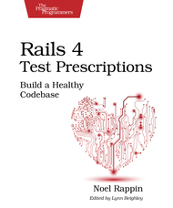
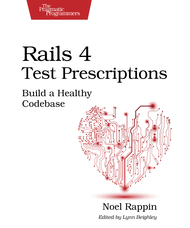

BDD on Rails
Getting development confidence
TDD - Test-Driven Development
- What is TDD?
- Small steps
- Fail (red), pass (green), refactor...
- Emergent design
- Technique to deliver high-quality code to... testers!
BDD - Behaviour-Driven Development
- Like TDD, just better
- Focus on what an object does
- Uses the right words: given, when and then
- Augments TDD
Specifying your code with RSpec
describe MovieList do
context "when first created" do
it "is empty" do
movie_list = MovieList.new
movie_list.should be_empty
end
end
end
MovieList when first created
is empty
BDD Cycle

Planning
- What is the release goal?
- User Stories are a planning tool
- Have business value
- Be testable
- Be small enough to implement in one iteration
- ATDP - Acceptance Test–Driven Planning
- Acceptance criteria
feature 'Pay' do
let!(:order) { create(:order, :with_items) }
let(:person) { order.student.person }
context 'cielo gateway' do
scenario 'success payment', :js, :vcr do
login(person)
visit order_path(order)
update_personal_info # given
pay_by_cielo_credit_card('0000000000000001', 'visa') # when
expect(page).to have_approved_payment_info # then
end
end
end
How traditional projects fail
- Delivering late or over budget
- Delivering the wrong thing
- Unstable in production
- Costly to maintain
If we now how, where are the whys? Glad you asked...
Why traditional projects fail
- How traditional projects works
- How traditional projects really work
- A self-fulfilling prophecy
BDD is an Agile Tool
- Individuals and interactions over processes and tools
- Working software over comprehensive documentation
- Customer collaboration over contract negotiation
- Responding to change over following a plan
- Is it a new silver bullet?
Agile Methods Addres Project Risks
- No Longer Delivering Late or Over Budget
- No Longer Delivering the Wrong Thing
- No Longer Unstable in Production
- No Longer Costly to Maintain
It's Also has Costs
- Outcome-Based Planning
- Streaming Requirements
- Evolving Design
- Changing Existing Code
- Frequent Code Integration
- Continual Regression Testing
- Frequent Production Releases
- Co-located Team
Software That Matters
Behaviour-Driven Development is about implementing an application by describing its behavior from the perspective of its stakeholders.
- Enough is enough
- Deliver stakeholder value
- It's all behaviour
The Project Inception
Start simple: improve our supply chain or understand our customers better.
Forget about nonfunctional requirements.
Core stakeholders define the vision, incidental stakeholders help to understande what's possible, at what cost and with what likelihood.
The Project Inception
Some recommends to describe these things using SMART.
BDD recommends to use feature set, like reporting or customer registration.
General concepts to keep the conversation and help specify the solution.
The Cycle of Delivery
- Stakeholder discuss requirements with a business analyst
- Analyst helps stakeholder write requirements as features
- Turn features in stories of few days of work
- Define what done means for each story
- Testers help to identify the important scenarios
- Scenarios should be easy to read by business people
- Implementation, deploy, fedback and repeat!
What's in a Story?
- Title
- Narrative
- Identifies stakeholder
- Description of the feature
- Benefit of the delivery
- Acceptance criteria
Common Story Formats
as a [stakeholder], I want [feature] so that [benefit]
in order to [benefit], a [stakeholder] wants to [feature]
BDD on Rails, finally 🎉
RSpec
Capybara
FactoryBot
vcr
Outside-In Rails Development
- Start with a scenario
- Run the scenario with RSpec and Capybara
- Drive out the view implementation using the red/green/refactor cycle
- Drive out the controller with RSpec
- Drive out the models and other objects with RSpec
- Execute the scenario specs to be sure that everything is fine
Digging Deep
Let's get hands dirty add implement subscriptions in a BDD fashion!
$: git hack feature/subscription-specs
require 'rails_helper'
feature 'Subscription' do
let(:user) { create(:user, :with_subscription_permissions) }
let(:student) { create(:student) }
let(:assignable_course) { create(:course_as_full, :assignable, :published) }
scenario 'user creates subscription for student', :js do
login(user.person)
visit rails_admin.new_subscription_path(model_name: :subscription)
autocomplete('Buscar Cliente', with: student.person.full_name)
autocomplete('Buscar Assinatura', with: assignable_course.title)
click_button 'Salvar'
expect(page).to have_content('Assinatura criada com sucesso')
end
end
require 'rails_helper'
describe Subscription do
it { expect(subject).to validate_presence_of(:item) }
it { expect(subject).to validate_presence_of(:student) }
it "only allow one assignable item per student", :focus do
subscription = create(:subscription)
expect(subscription).to validate_uniqueness_of(:item).scoped_to(:student_id)
.with_message('o aluno já possui esta assinatura')
end
end
def iugu_subscription(reload = false)
return nil if iugu_subscription_id.nil?
if reload
@iugu_subscription = ::Iugu::Subscription.fetch(id: iugu_subscription_id)
else
@iugu_subscription ||= ::Iugu::Subscription.new.tap do |subscription|
subscription.set_attributes(
Rails.cache.fetch("iugu_subscriptions/#{id}_#{updated_at}", expires_in: 24.hours) do
::Iugu::Subscription.fetch(id: iugu_subscription_id).attributes rescue {}
end
)
end
end
@iugu_subscription
end
describe '#iugu_subscription', :focus do
context 'without iugu subscription id' do
subject { build(:subscription) }
it { expect(subject.iugu_subscription).to be_nil }
end
context 'with iugu subscription id' do
subject { build(:subscription, iugu_subscription_id: '53F25F7547934DB58578AC781295A801') }
it 'cache iugu requests' do
Rails.cache.clear
subject.iugu_subscription
expect(::Iugu::Subscription).not_to receive(:fetch)
subject.iugu_subscription
end
it 'ignores cache when using the reload flag' do
Rails.cache.clear
subject.iugu_subscription
expect(::Iugu::Subscription).to receive(:fetch)
subject.iugu_subscription(true)
end
it 'returns an empty Iugu::Subscription for invalid iugu_subscription_id' do
subject.iugu_subscription_id = 'invalid'
expect(subject.iugu_subscription.attributes).to be_empty
end
end
end
Subscription
#iugu_subscription
without iugu subscription id
should be nil
with iugu subscription id
cache iugu requests
returns an empty Iugu::Subscription for invalid iugu_subscription_id
ignores cache when using the reload flag
It's not All Flowers
Capybara has a great API, but can't deal with all JS libs
jQueryUI 🤮
Be prepared to learn Capybara internals and open your browser console and interact with JS
We just migrated from capybara-webkit to headless Chrome! 🎉
def autocomplete field, options={}
options, field = field, nil if field.is_a? Hash
if field
find_field(field).autocomplete(options)
session.find('li.ui-menu-item a').click
else
set(options.delete(:with)) if options[:with]
jquery_this(%{.keydown()})
end
end
def jquery_this dot_something, *args
session.driver.browser.execute_script %{return $(arguments[0])#{dot_something}}, self.native, *args
end
Controller Specs
describe OauthController do
describe "#index" do
context "anonymous user" do
before { get(:index) }
it "render index template" do
expect(response).to render_template(:index)
end
it "assigns @person variable" do
expect(assigns(:person)).to be_a_new(Person::FullValidation)
end
end
end
end
Common expectations
expect(response).to render_template(:new)
expect(response).to redirect_to(location)
expect(response).to have_http_status(:created)
expect(assigns(:widget)).to be_a_new(Widget)
Specs Available
- Model
- Controller
- Request
- Feature
- View
- Helper
- Mailer
- Routing
SWIFT: Making Great Tests
- Straightforward
- Well defined
- Independent
- Fast
- Truthful
Straightforward
## Don't do this
it "should add to 37" do
expect(User.all_total_points).to eq(37)
end
## Straight!
it "rounds total points to the nearest integer" do
User.create(:points => 32.1)
User.create(:points => 5.3)
expect(User.all_total_points).to eq(37)
end
Well Defined
Well defined tests results in the same results in every execution
Villains: time and dates, random numbers and external services calls
Heroes: mock/stub and timecop and vcr gems
Independent
The tests executation order should not change it's result
Fast
You can't be able to check Twitter while your tests run!
The most important points of slow Rails tests:
- Startup time
- Lots of independent object creation to test a method
- Extensive use of database or external services
Truthful
A test must pass when the code works, and fails when it doesn't
it "shows the project section" do
get :dashboard
expect(response).to have_selector("h2", :text => "My Projects")
end
it "shows the project section" do
get :dashboard
expect(response).to have_selector("h2#projects")
end
SWIFT Tests
Tests suites that are slow, complicated or fragile are worst than not tests at all.
Write tests against behaviour and not implementation and make then fast!
Test Pyramid

Test Pyramid

Testing Iceberg

Becoming a Great Tester
It's like programming, writing, playing and sex!
Study and do it a lot!
Resources - Books
 
